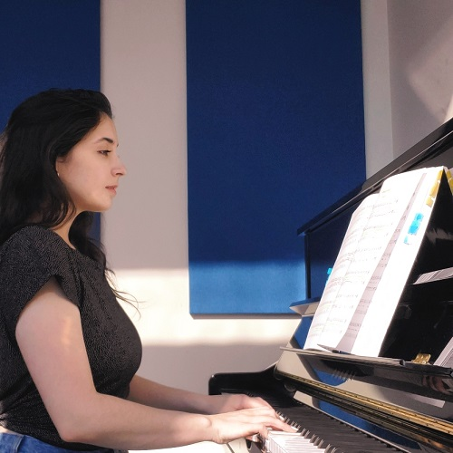

Welcome to my private studio, where I offer a refined and personalized approach to vocal and
instrumental instruction. As an experienced music teacher and operatic singer, I bring a wealth of
firsthand experience to my teaching practice. With years of training and performance in the operatic
realm, I understand the intricacies of technique and the art of storytelling through music. Whether you
are just beginning to explore your musical talents or seeking to refine your technique, my private
lessons provide a tailored curriculum designed to meet your specific needs and goals. With a focus on
building a strong foundation in technique, expanding repertoire, and cultivating artistry, each lesson
is thoughtfully crafted to enhance your musical growth and development. Drawing upon my own journey as a
singer, I provide a supportive and nurturing environment where you can feel confident exploring your
potential. Through technical exercises and interpretive coaching, I am committed to helping you unlock
your full musical potential and achieve your aspirations. Let's discover the beauty and power of your
voice together.

Sarah accompanying herself on piano.
Studio Policies
To ensure that our time together is productive, fulfilling, and enjoyable, I’ve established the
following studio policies. Please take a moment to review them, and don’t hesitate to reach out if you
have any questions or concerns.
Policy List
Lesson Schedule and Attendance
Scheduling: Lessons will be scheduled on a weekly or bi-weekly basis, depending on availability
and preference. Please communicate any scheduling conflicts at least 24 hours in advance, and
we’ll do our best to reschedule your lesson for a more convenient time.
Punctuality: Please arrive promptly for your scheduled lesson. If you’re running late, please
notify me as soon as possible. However, please note that lessons will still end at the scheduled
time to accommodate other students.
Missed Lessons: Missed lessons without prior notification will not be rescheduled or refunded.
However, I understand that emergencies arise, so exceptions may be made on a case-by-case basis.
Payment and Billing
Tuition: Tuition fees are due at the beginning of each month and cover the cost of all scheduled
lessons for that month. Payment can be made in cash, check, or via electronic transfer.
Late Payments: A late fee of $20 will be applied to tuition payments received after the due
date. Persistent late payments may result in termination of lessons.
Refunds: Tuition fees are non-refundable. In the event of prolonged illness or unavoidable
circumstances, credits for missed lessons may be applied to future tuition payments.
Studio Etiquette
Respect: Respect for oneself, the instructor, and fellow students is paramount. Discrimination,
harassment, or disrespectful behavior will not be tolerated and may result in termination of
lessons.
Preparation: Come to each lesson prepared and ready to learn. This includes practicing assigned
repertoire, exercises, and any other materials provided.
Health and Hygiene: Please refrain from attending lessons if you are feeling unwell or
exhibiting symptoms of illness. Additionally, maintain good personal hygiene, including proper
vocal care and hydration.
Communication
Open Communication: I encourage open communication between students and myself. If you have any
questions, concerns, or goals you’d like to discuss, please don’t hesitate to bring them up
during our lessons or via email.
Feedback: Constructive feedback is an essential part of the learning process. I will provide
feedback during lessons, and I encourage you to ask questions and seek clarification whenever
necessary.
Parental Involvement: For younger students, parental involvement is encouraged, particularly in
monitoring practice habits and providing support at home.
Studio Events and Performances
Recitals and Performances: Throughout the year, opportunities for performance will be provided,
including studio recitals, competitions, and community events. Participation is highly
encouraged but not mandatory.
Preparation: Adequate preparation and attendance at rehearsals are essential for participation
in studio events. Performance opportunities are valuable learning experiences and help students
develop confidence and stage presence.
Conclusion
By enrolling in lessons at our studio, you agree to adhere to the above policies. These policies are
subject to change with prior notice. Thank you for choosing our studio—I look forward to making
beautiful music together!